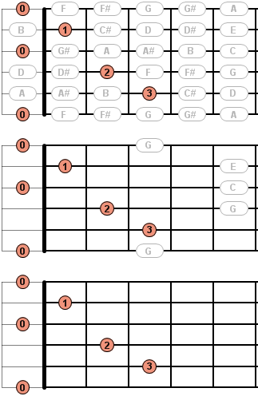

You can set the following preferences for the Fretboard View:
Here you can specify which additional information or hints shall be presented at the top of the view.
Here you can specify the background of the shown fretboard. You can choose between several colors and wood patterns as well as no background.
Here you can specify whether the notes of empty strings shall be displayed at the beginning as well as the end of the fretboard. In case you deactivate this option notes of empty strings are only be shown at the beginning of the fretboard.
Here you can specify whether or not a barre chord shall be drawn as a thick line.
Here you can specify whether or not unused notes shall be shown on the fretboard. Unused notes are notes which are not necessary for a shown chord or scale.
If you have hidden the unused notes, here you can modify this setting especially for chords. You can specify whether or not unused notes, which can be found in a chord, shall be shown. A C major chord, for example, consists of the notes C-E-G, so all notes C-E-G will be shown on the fretboard.

Here you can specify whether unused notes shall be displayed with a gray or black font and border color.
Here you can specify whether to hide or show the intarsia above the fretboard.
Here you can specify whether to hide or show the fret numbers below the fretboard.
Here you can specify whether the fret numbers below the fretboard shall be displayed in Arabic (1, 2, 3, 4, ...) or Roman numerals (I, II, III, IV, ...).